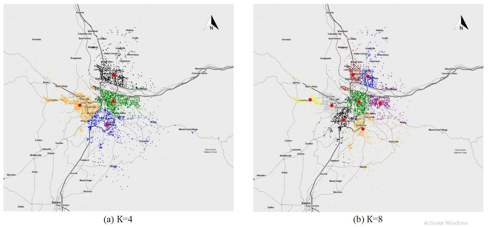
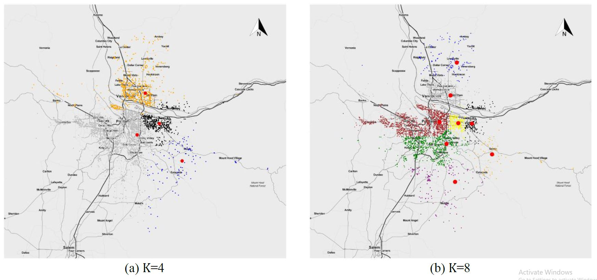

A Hybrid Genetic Algorithm for Multi-Emergency Medical Service Center Location-Allocation Problem in Disaster Response
This is one of the projects when I worked as a Research Assistant at Engineering and Computational Optimization Laboratory, Pusan National University. This work was supported by the National Research Foundation of Korea (NRF) grant funded by the Korea government (MSIP) (No. 2015R1A2A1A10054253).
Abstract
Temporary emergency medical service center provides an expeditious and appropriate medical treatment for injured patients in the post-disaster. As part of the first responders in quick response to disaster relief, temporary emergency medical service center plays a significant role in enhancing survival, controlling mortality and preventing disability. In this study, the final patient mortality risk value (injury severity) caused by both travel distance (travel time) (M1) and initial mortality risk value (M2) is considered to determine the location-allocation of temporary emergency medical service centers. In order to improve effective rescue task in post-disaster, two objectives of models are developed. The objectives include minimize the total travel time and the total mortality risk value of patients in the whole disaster area. Then, genetic algorithm with modified fuzzy C-means clustering algorithm is developed to decide locations and allocations of temporary emergency medical service centers. Illustrative examples are given to show how the proposed models optimize the locations and allocations of temporary emergency medical service centers and handle post-earthquake emergencies in the Portland area. Furthermore, comparisons of the results are presented to show the advantages of the proposed algorithm in minimizing the total travel time and the total mortality risk value for temporary emergency medical service centers in disaster response.
Data Sets
In this study, a specific disaster type is taken into consideration because the types of disaster result in different outcomes of damages and casualties. Here we consider an earthquake as our post-disaster environment and a specific level of earthquake leads to a certain number of casualties. For instance, the earthquake magnitude can destroy almost every facility of the city.
The data set we used in the computational experiments is a real-world data of Portland (America) which has a population of 1.6 million and provides people geographical coordinates locations. We transform the earth coordinate of Portland into 2D coordinate, then, the proposed methodology is applied in this area considering patient’s injury severities and geographical locations.
Experimental Results
Here, the data set is applied in M1 and M2 with two different number of clusters K=4 and K=8. And the injured patients with higher injury severities are given in the right side of the area because of different radius to the earthquake epicenter. In the experimental results, big red points stand for temporary EMS centers and small points in diverse colors stand for patients. Beside, small points in the same color indicate that they belong to the same cluster.

Figure 1. Temporary EMS center maps with different number of clusters in M1 (to minimize the total travel time)

Figure 2. Temporary EMS center maps with different number of clusters in M2 (to minimize the total mortality risk value)